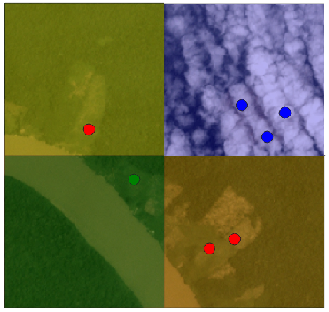

Welcome to DefPointValidator’s documentation!¶
This pluging help to validate deforestation points using RGB 4.7m/pix images from Planet Labs month mosaics. Is based on computer vision tools and its inovator because not use spectral analisis of images.
About¶
This plugin was build as product of master degree final project in the MINE Uniandes Colombia master program in colaboration with IDEAM.
The main contributors were: Gustavo Becerra, Harry Torres, Ricardo Santamaria, Maria Castro and Gustavo Galindo.
Is in test version the clasification accuracy is actualy about 75%
Contents:¶
Contents: